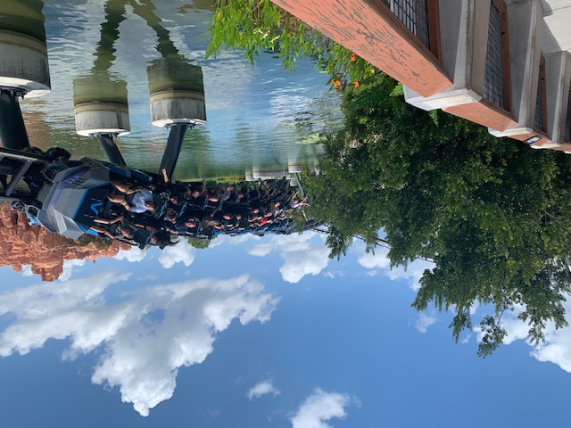
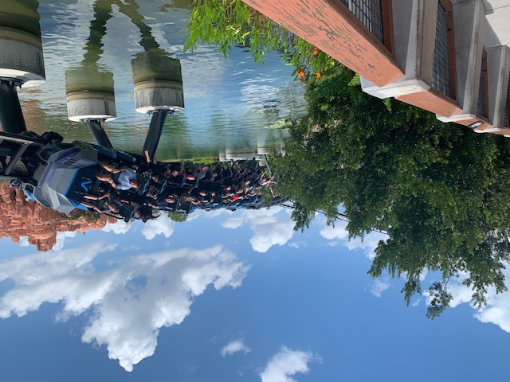

Three Nice Days at Islands of Adventure
I spent a whopping 36 total hours at this park. While the trio of thrill coasters found here is elite, Universal's mandatory locker policy put a damper on my visits.
Overview
I was at IOA for three pretty full days: 6/7 from 8:30AM-8PM, 6/11 from 8AM-10PM, and 6/12 from 11AM-9PM. My coaster totals were 17 rides on Velocicoaster, 7 rides on Incredible Hulk, 4 rides on Hagrid's, one ride on Flight of the Hippogriff, and one ride on Seuss Trolley (yes, I consider this a coaster as I count other Mack powered coasters and think it shoud be all or nothing). I missed Pteranodon Flyers. I had about an hourlong weather delay on all 3 days. Islands of Adventure was about as busy as the Disney parks, in terms of queue times, shaded seating availability, and pathway crowd levels. I love the variety of theming that each island has, but wish for more rides. My feet appreciated the smaller park size when compared with places like BGT, but this somewhat hurt the immersiveness of each island. For example, while trying to enjoy Jurassic Park, I could spy Hogwart's Castle from the bridge, and see Seuss Landing and Marvel Island from Velocicoaster's queue. I stayed at an on-site hotel. The Universal shuttle bus transportation came every 5-10 minutes and kept up during busy times. Buses leaving the parks after noon smelled pretty bad of body odor. I used EPA twice to enjoy significantly reduced wait times for Velocicoaster.
Coasters
Other than dealing with the dreadful lockers detailed below (which weren't quite as bad since the locker stations were mid-queue), Velocicoaster is outstanding! The queue, especially once inside, is engaging. This coaster has great restraints and operations. I typically waited 40 minutes during regular hours and 20 minutes during EPA. My first two rides on 6/7 felt slow; the speed and airtime didn't match what many others had described. However, the 15 rides afterwards (some in the morning) were much faster, whippier, and more thrilling. Surprisingly, this coaster is already aging. There are rough spots, namely the launches. Some track needs fresh paint. However, none of the above gripes significantly impact my opinion of Velocicoaster. I love all of the inversions, especially the last two. While the Mosasaurus roll is as whippy and exhilarating as people say it is, it's probably #3 on my list of favorite inversions behind Tatsu's pretzel loop and Goliath's zero-g stall. I'm not fond of the stretch between the dive loop and the second launch, which is kind of dull except for an airtime moment and getting close to the dinosaurs. The second half is really what makes this ride spectacular, between the sustained airtime and steep drop on the top hat, lake setting, and superb inversions. Velocicoaster is very balanced - it has airtime, hangtime, high moments, low-to-the-ground/water moments, quality inversions, quick direction changes that aren't jerky, forceful launches, and amazing theming. My only issue with the layout is the "dead spot" in the first half when the train zigzags around the paddock for about 1000 feet. The intensity level is just right for me - more powerful than a ride like Copperhead Strike but dialed down from an out-of-control ride such as Maverick. I rode Velocicoaster in all rows except the front. The very back was my favorite.
The park's other Intamin launch coaster, Hagrid's Magical Creatures Motorbike Adventure, is my second favorite at Universal Orlando. I now understand why this ride is so popular and highly praised, even for guests like me who aren't Harry Potter fans. I was expecting a ride akin to Wave Breaker at SeaWorld San Antonio, but Hagrid's was way better! All launches feel like they have quicker acceleration than in reality. The coaster's Forbidden Forest free fall drop surprised me, even though I knew it was coming. I love that Hagrid's just zooms around, and all those launches and on-ride surprises make it such an awesome experience! Normally, I disike it when coasters stop and start so often (like Hollywood RRR a short walk or train ride away), but on Hagrids's, I can overlook the pacing because each pause has a purpose that adds to the ride experience. I see why this coaster is the most popular ride at Universal. Its thrill level appeals to most guests. I waited 75 minutes on average for Hagrid's. The single rider line was about 20 minutes shorter than the standby line. Three times, I rode in the motorbike seat and once I rode in the side car. My only complaint is that by the end of the ride, the lap bar is borderline thigh-crushing.
If it weren't for roughness and a lackluster finale, I'd surely prefer Universal's lone B&M, Incredible Hulk to Hagrid's. I love the launch, soundtrack, and layout until the MCBR. Soaring through massive inversions over water after blasting out of a tunnel is an experience that all coaster-lovers should have. Some rides were smoother than others, but all featured some headbanging around the cobra roll and first loop. The zero-g roll is my favorite inversion, and a great way to immediately follow the launch. This coaster really slows down after the MCBR and sort of limps into the final brake run. The Hulk's theming is neat and operations are speedy. I usually waited around 30 minutes in both the single rider line and standby line. For this coaster, I wouldn't hop in the single rider line unless the regular posted wait is over an hour. I rode in the front, middle, and back. It's a rarity, but I actually prefer this B&M in front for the launch, fog, and view. Hulk is such a (mostly) intense, fun, and unique B&M. I wish there were more B&M's with launches in the USA.
I have no comments on Flight of the Hippogriff or High in the Sky Seuss Trolley Train Ride.
Other Rides
Harry Potter and the Forbidden Journey is my favorite non-coaster ride at Universal. The technology used is really cool! I rode this ride four times, utilizing the single rider line for less than 15 minute waits. There are smooth transitions from the screens to real scenery. I enjoy the motion of the ride vehicle. The story is a true adventure, and riders feel involved. I rode Dudley Do-Right's Ripsaw Falls at 9:30AM because I didn't want to wait 2+ hours for it later on. Of all the water rides on my Florida trip, this one takes the cake for getting me wet - I got soaked head to toe! It's tricky to get in and out of the log. I couldn't follow the story, but I appreciated the duration and thrills. I slightly prefer Splash Mountain, but Ripsaw Falls is my second-favorite log flume ever! Jurassic Park River Adventure has nice theming but doesn't otherwise feel different from a regular shoot the chute. The single rider line moved slow and I didn't get very wet. I rode The Amazing Adventures of Spider-Man twice because it was better than I anticipated. I like the special effects and featured lineup of villains. There are some sudden movements. The single rider line for Spider-Man was less than half of the posted wait and moved quickly. I think The Cat in the Hat is a cute family ride and a great way to break up a hot day. This ride gives me nostalgia.
Lockers
Something that I dislike extremely about Universal Orlando is their locker policy. I probably wasted a precious hour each day using the lockers. I was alright with the semi-mandatory lockers used for the Harry Potter rides (and Mummy whenever it re-opens). The "lock away your bags" rule is used for some coasters at other parks like Carowinds, Cedar Point, and Kings Island. This system actually speeds up operations by eliminating the need for cubbies/bins, thus streamlining the boarding process. However, I have huge objections to the "put everything in a locker and then go through airport-like security" policy before riding three of Universal's most thrilling attractions: Rip Ride Rockit, Incredible Hulk, and Velocicoaster. My complaints are as follows:
- The mandatory lockers and metal detectors are an inconvenience and waste of valuable time. When guests pay hundreds or thousands of dollars to visit Universal, they shouldn't have to spend time on these extra steps to ride thrilling coasters.
- Locker areas are usually crowded and/or unair-conditioned.
- Even when sinks are nearby, spills from water bottles, souvenir cups, etc. are common when guests retrieve their belongings.
- It's a safety concern. As a youngish solo female traveler, my cellphone is my lifeline for communicating with people who aren't strangers. I don't like being forced to go without it for extended periods of time.
- This policy is unnecessary for riders like me who wear pants with zipper pockets. I've literally ridden amusement attractions thousands of times with no issues. There's no way loose articles are falling out of my zipper pockets.
- The way to open/close the lockers is with a park ticket, annual pass, or hotel room key, which guests then must hold onto during the ride. This item is a LOOSE ARTICLE. If the point of the lockers is to completely eliminate loose articles, this system is a failure.
- In addition to the security to enter the parks, going through airport-like security could be upsetting to some guests. I set off the Velocicoaster metal detector with empty pockets a handful of times and had to be wanded...with not the fun kind of wand.
- If the locker malfunctions, riders could be stuck waiting a long time to retrieve their stuff. This happened to me on my final ride on Hagrid's. After putting all loose articles in the locker, I got in line with a 90-minute posted wait. I ended up waiting 150 minutes (without my snacks, phone, or water bottle) due to a lightning sighting. When I returned to the locker area, it was flooded with unhappy guests. Upon scaning my ticket, a screen popped up saying I owed $3 for an expired rental. I might've just paid it to get out in a timely manner, but my forms of payment were inside the locker. So, I almost had a meltdown waiting 30 minutes in a small, hot, overcrowded, understaffed area before a team member assisted me. I guess I was due for a locker mishap having been forced to use them 30+ times, but this experience put me in a very bad mood.
Food & Merchandise
My favorite meals were from Green Eggs and Ham Cafe. I loved the traditional tots and the pizza tots equally. The pairings seem strange but work wonderfully in terms of flavor and texture. These meals are filling and good values too at around $15 with a fountain drink. I had an obligatory frozen butterbeer each day. These specialty drinks were cold, sweet, and delicious. However, be prepared to pay $8.50 each time. For one dinner, I got the salad with chicken from Fire Eater's Grill. While the chicken was tasty, the salad mix was yucky - very soggy and full of brown lettuce. On another day, I got the grilled chicken sandwich meal from Burger Digs. It tasted OK, but I somehow missed the entire toppings bar and ate my sandwich plain. Merchandise-wise, I purchased a Velocicoaster t-shirt from the Discovery Center for $24.
Cost
The ticket option I went with was the 3-Park 3-Day Base Ticket with 2 Days Free promotion, which cost $354 total. I also received $200 off my 7-night hotel stay at Dockside Inn & Suites for bundling my ticket and room. I wouldn't have purchased a 5-day ticket if the bonus days hadn't been free. Two or three days is plenty of time for a solo coaster enthusiast to visit both IOA and USF. When EU opens, 5 days will probably be ideal for Universal Orlando. Check out the cost breakdown of my entire trip here.
Photos
These photos were taken by me. Please credit this website if used.


 
